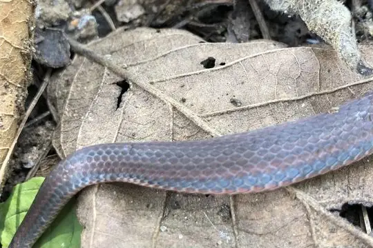
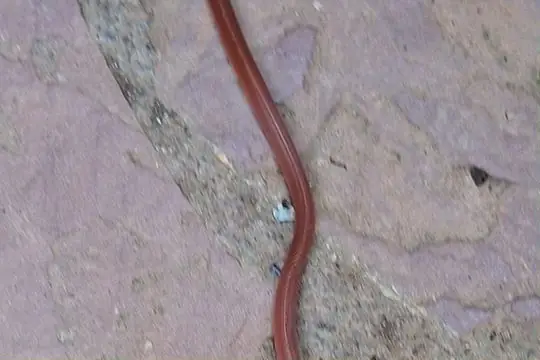

Adelphicos
The genus Adelphicos (family Colubridae) has 9 species in SnakeList (none venomous), recorded in 5 countries.
- 9species
- 9non-venomous
- 5countries
About the genus
A genus of the family Colubridae (colubrids).
Species
Showing 9 species

Burrowing SnakeAdelphicos nigrilatum Dary's Burrowing SnakeAdelphicos daryi
Dary's Burrowing SnakeAdelphicos daryi- No photo yetIbarra's Burrowing SnakeAdelphicos ibarrorum
 Middle American Burrowing Snake (quadrivirgatum)Adelphicos quadrivirgatum
Middle American Burrowing Snake (quadrivirgatum)Adelphicos quadrivirgatum Middle American Burrowing Snake (visoninum)Adelphicos visoninum
Middle American Burrowing Snake (visoninum)Adelphicos visoninum
Newman's earth snakeAdelphicos newmanorum- No photo yetOaxacan Burrowing SnakeAdelphicos latifasciatum
 Sargi's Earth SnakeAdelphicos sargii
Sargi's Earth SnakeAdelphicos sargii Stuart's Burrowing SnakeAdelphicos veraepacis
Stuart's Burrowing SnakeAdelphicos veraepacis
No snakes in Adelphicos match.